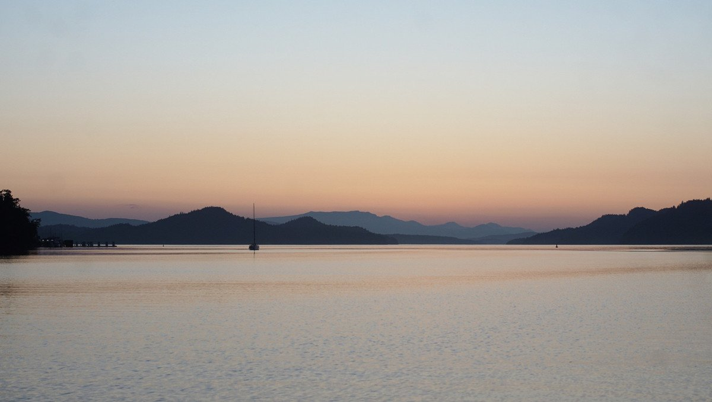
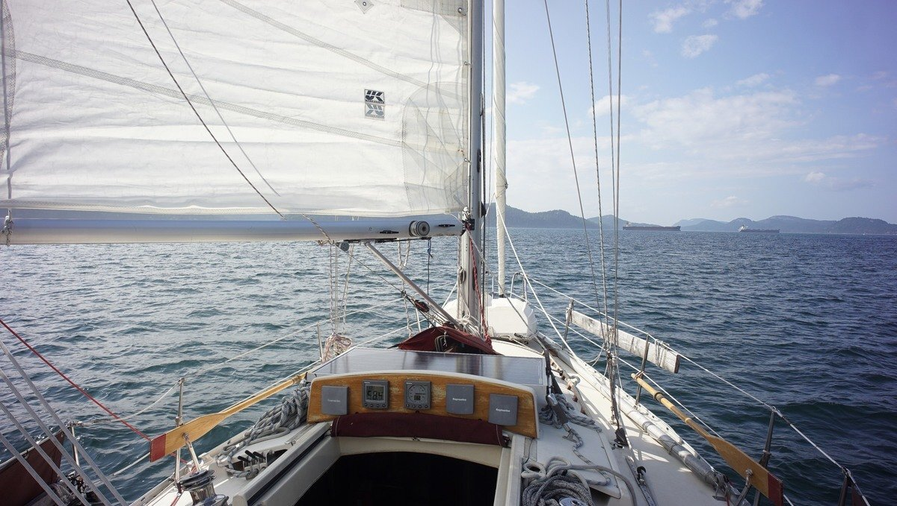

saturna
We visited Saturna Island in the Gulf Islands for the first time on August 22nd 2021.
We sailed into Plumper Sound and turned right towards Lyall Harbour. We expected to stay here a day or two, but we ended up staying a full week. The bay is well protected from summer winds, although if a wind is blowing from directly south it can get pretty gusty because of nearby hills(not as much as Boot Cove though). The bay is also open to the NW, but we didn't experience any while there. When the wind is weak from Haro Strait, and stronger South of Nanaimo, we did get some wind from the north, but never strong enough to make it uncomfortable, and it usually would die before evening.
We anchored deep in the bay, just off the little marina. The depth in this bay is perfect for anchoring. It's possible to drop the hook almost anywhere, with depths ranging from 15-25 feet in mud. There was no one around most times so we could set a good scope without worrying. Most boats preferred anchoring near the public dock at the head of the bay, although there is an underwater cable in that area that you have to watch out for. The ferry comes and goes often, but the wake isn't bothersome. The boaters anchored near the dock don't seem to mind the ferry either, and they're much closer to it.
The public dock has ample room, but we've never tried it. We've only tethered Teapot to it, on the north end of the dock.
We visited the Saturna Lighthouse Pub once to meet a friend. The pub has a great view of Plumper Sound, and a good selection of beer, and unhealthy pub food. We craved fries at the time, and got our fill!
In evenings, we rowed around the bay with teapot.
We didn't venture on land much on this visit, but we hope to next we go. We met some locals that live on the East Point of the island, and they offered to take us around! There are a few farms on the island, even fresh olives apparently. The climate here is perfect for it.